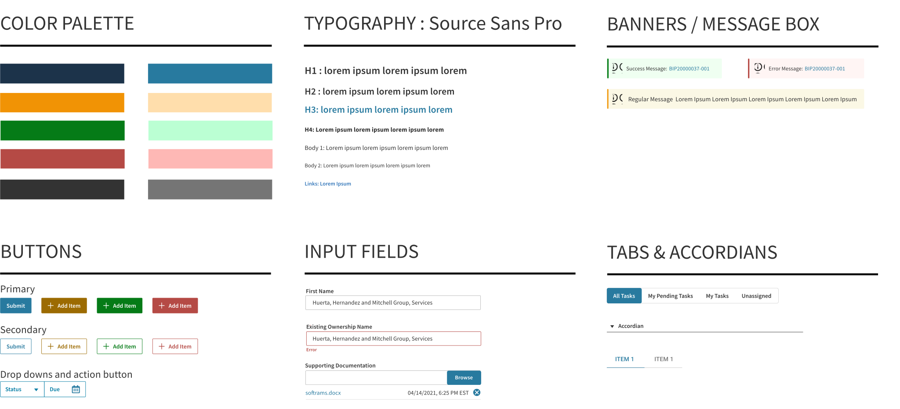
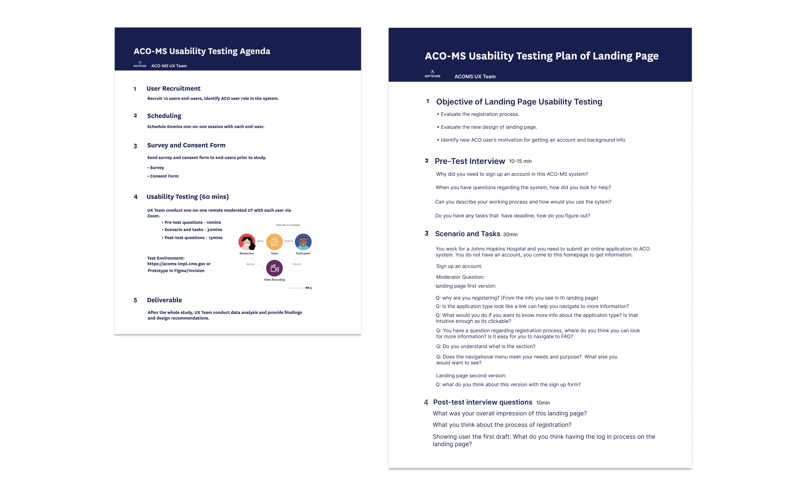

October 2019 - Present
BACKGROUND The Shared Savings Program is a voluntary program that encourages groups of doctors, hospitals, and other health care providers to come together as an ACO to give coordinated, high quality care to their Medicare beneficiaries.
The product is part of The Centers for Medicare & Medicaid Services (CMS),
which is a federal agency within the United States Department of Health and Human Services (HHS).

THE PROBLEM The Scope of the Shared Shaving Program grew significantly and needed a system that could support annual changes to program requirement for nearly 513 ACO organizations.
The system needed a redesign to create a seamless, intuitive and improved system to meet the growing user needs.
MY ROLE I was the only UX designer to lead the redesigns
and new modules in the system. I worked alongside a UX researcher to understand the user pain points with a focus on search, browse and to manage visual
complexity.
MY APPROACH

DEFINING THE CHALLENGE
Landing Page, NOIA Application & Registration Redesign
The Registration and
NOIA application are two different process for the users to get verified and get access to the system. The users found the process very tedious, time consuming and complex.
The goal was to make the process simple for the user to navigate and get access to the system without having to wait.
Picturing the Target Audience
We interviewed the end users and created two personas to help us better understand our target audiences:

Key Insights
We interviewed the end users to understand their frustration from
the existing flow by asking why. With the feedback, we came up with
a userflow to reduce the complexity of the process. Few of the insights are as follow:

User Flow
We started to ideate multiple flows based on the initial feedback. After reiterating and discussing, we streamlined the flow to a very simple yet time saving process for the user. Below is a difference between the existing and new flow:
Old User Flow

New User Flow

Wireframes & User Research
For the design process, I started with a series of wireframes to build the initial structure and started discussing the flows with the product manager and lead business
analyst. They were really excited about the direction the wireframes and flow was going, so we scheduled standups every
day and brainstormed the flow using Balamiq. From these meetings, I was able to achieve a low-fidelity flow which
was used to conduct usability testing to validate our assumptions.
Branding
Once the wireframes were done, I turned my focus to the branding. There are two goals of our visual make over -
1. Convey the message that ACO-MS matches CMS's culture. I wanted the product to be approachable for users since it's being associated with CMS.
I started to incorporating colors that match CMS color palette while giving it a new look and feel.
2. The system lacked proper padding and text spacing, which made it very difficult for users to focus on the content. So a total visual overhaul was needed to make the experience useful, meaningful and enjoyable for users.
UI Style Guide

Hi-fidelity Prototypes and Usability Testing
High-fidelity mockups were created in Figma to show what the redesign would actually look like.
These mockups followed the user feedback from wireframes and the UI patterns in the style guide to keep a consistent feel throughout the product.
So we were able to run usability
tests with the users to get feedback. I also ran 508 compliance tests for the prototypes for accessiblity.
Embedded Figma Prototype: Click here!
Embedded Figma Prototype: Click here!
Research: Usability Testing
We prepared and sent out user-surveys and questionnaires to 12 users, out of which few were doctors and others where users working in organizations prior to the usability test.
We were able to do a mixture of guerrilla tests with the users.
We made several incremental changes
maintaining visual clarity and user friendly flows over the course of 2 weeks of rapid iterative and evaluation testing.
